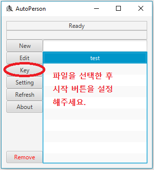
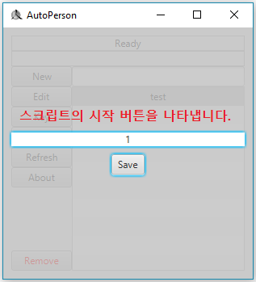
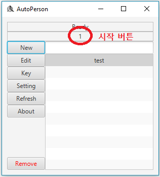
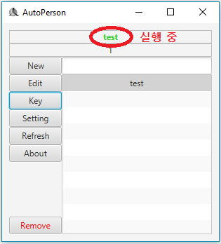

이번엔 파일을 실행해 보도록 하겠습니다.
먼저 시작 버튼을 설정해 줘야 합니다.
실행하시려는 파일을 선택한 후 key 버튼을 클릭해 주세요.

원하시는 키보드 키를 누르고 Save 버튼을 클릭해 주세요.
방금 누르신 키보드 키가 시작 버튼이 됩니다.

아래 사진처럼 설정하신 시작 버튼을 확인하실 수 있습니다.

방금 설정하신 시작 버튼을 누르시면 파일이 실행됩니다.
초록색 글씨로 실행 중인 파일이 보이게 됩니다.

실행이 종료되면 다시 "Ready"인 상태로 바뀝니다.
실행 중에 시작 버튼을 다시 누르면 실행이 종료됩니다.